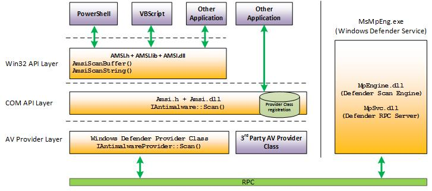
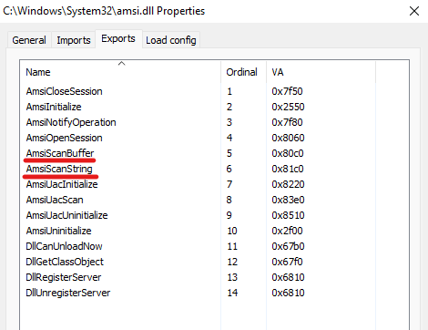
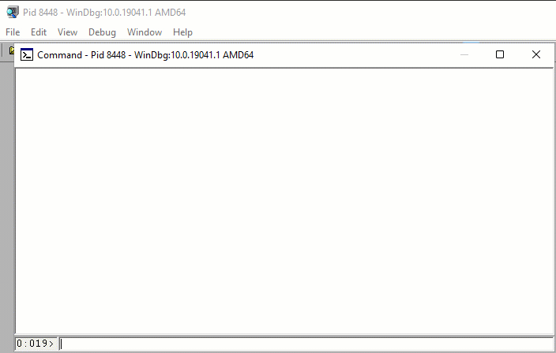
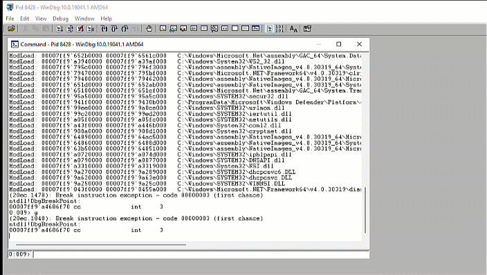

Memory Patching (AMSI Bypass)
Introduction
ألسلام عليكم
معظمنا واجه ال (Antimalware Scan Interface) أو المعروفة ب `AMSI`. وغالباً واجهتم مشاكل في اي وقت حاولتم تضيفون powershell module مثل `Mimikatz` وغيرها. ال `AMSI` رح يصيرل له load في أي Application يستخدم ال `WIN32 API`. تقدرون تطلعون على ال `AMSI architecture` من الصورة الي بالأسفل

Overview
من الصورة نقدر نلاحظ ان ال function المسؤل عن التشيك على الملفات الخبيثة هو `AmsiScanBuffer()` و `AmsiScanString()`. نقدر نستخدم `Process Hacker` ونشوف ايش ال Modules الي جالسة تشتغل مع اي برنامج. فمثلاً في ال Powershell نقدر نشوف ان ال `amsi.dll` صاير له load في ال memory.

نقدر بنفس الوقت نشوف ال exported functions الي ذكرناهم سابقاً. تركيزنا رح يكون على ال `AmsiScanBuffer()`

AmsiScanBuffer()
اشتغلنا على ال reverse engineer لهذا ال function وفي نهايته شفنا هذه ال instructions:

Playing with WinDBG
نقدر نلاحظ أن ال process الخاصة بال scanning موجودة في اليسار. وفي المربع اليمين نقدر نشوف ال القيمة `0x0070057` والي هي عبارة عن error code من Microsoft. طيب ايش ممكن يصير اذا عدلنا على ال `AmsiScanBuffer()` في ال memory وخليناه دائماً يرجع لنا ال `0x80070057`. نقدر نجربها عن طريق WinDBG:

نقدر نشوف ال instructions الخاصة ب `AmsiScanBuffer()` وبنفس الوقت نقدر نشوف ال bytecode المقابل ل `mov eax,80070057h` والي هي `b857000780`. نقدر الأن نعدل على البداية الخاصة بال function عن طريق هذه ال instructions:
b857000780 mov eax,0x80070057
c3 ret
الي رح يصير هو الأتي رح نودي `0x80070057` الى `EAX` والي رح تكون ال return value ل `AmsiScanBuffer()`. نقدر نسوي هذا الكلام عن طريق WinDBG أول شي شغل powershell وسوي لها attach في WinDBG. حاول تسوي load لاي شي ممكن ال AMSI يوقفه:

الأن لازم نسوي reverse لل byte-code `mov eax,0x80070057 | ret` فتصير: `c380070057b8`. نقدر نستخدمها ونعدل على ال function عن طريق هذا الكوماند:
eq amsi!AmsiScanBuffer c380070057b8
وبعدها رح تقدر تسوي load لاي module تحتاجها.

Demo
We at Confidential Team belive in developing our own tools. You can find below a demo of our own script that patch the memory for you. The code will be shared later in 2022.

References
Read other posts